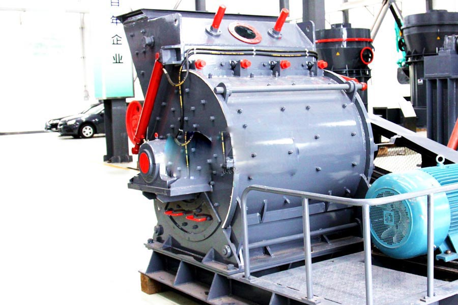

Construction waste crushing production line

Mobile construction waste crushing station for urban construction waste crushing.
marble crusher for sale
marble crusher for sale. Broken marble crusher equipment which, marble mining, processing generated in the process of rubble, corners more than expected, you will need crusher for crushing reprocessed to apply, broken large diameter marble can be used large-caliber machine Limai Crusher, you can also use a large jaw crusher, but relatively high cost, broken pieces of marble material can hammer crusher and efficient crushing machine.
Marble crusher, marble crusher, marble processing equipment, marble crushing production line to go through feeding, crushing, screening process, CAG produced a series of marble crusher, marble crusher, marble processing equipment to meet each customer kinds of requirements.

Marble crusher
CAG Machinery (Marble crusher) in mineral processing aspects widely used, many customers get more benefits, CAG product also mainly for minerals, rock crusher, mineral grinding, sand stone and mineral processing and other fields. We provide Marble crusher technical guidance, based on your specific needs, for your rational design of production lines.
Because the tariff is low, you can (Marble crusher) to save a lot of costs, it can also be purchased to get more benefits, our products and designs for you is really value for money.
In order to be used for buiding materials or industrial powder, marble must be crushed into small pieces. In this marble crushing process, we need marble crusher.
Marble crusher is the common marble mining machinery that used for crushing marbles into small size. In marble quarry, there are several mining equipmetns used in marble crushing and screening plant.
Indonesia marble crusher manufacturer. Marble stone crusher machine has several types. Marble jaw crusher is the primary crushing equipment, it is used in primary crushing process in marble crushing plant. Impact crusher and cone crusher is the secondary marble crushing machinery. They are used in secondary or tertiary crushing process. Hammer crusher is used for fine line crushing in line processing plant, so hammer crusher is also called hammer mill.
Vibrating feeder is the feeding machine that is used to feed stone materials evenly to the marble crushing machine. There are two types of vibrating feeder: inclined feeder and horizontal feeder. Some models have one motor, while the others have two motors.
Vibrating screen is the Separator machine. It is used to screen out the suitable particles throuth screen with different sieve pore size. There are two kinds of screening machine: Circular Motion Incline Vibrating Screen and Linear Motion Vibrating Screens. According to the the screening requirements, we install different screen layers.
There are another marble crusher, it is not only used as crushing machine, but also the screening machinery. It is mobile marble crusher or portable crusher. It is installed crushing machine, vibrating feeder, vibrating screen and belt conveyor together.
Marble crusher, marble crusher, marble crusher, marble crusher marble crusher alias, also known as marble crusher, can crush material its compressive strength up to 140 MPa material, having a crushing ratio, broken After the material was merit cubic particles.
Marble crushing and grinding process:
Marble go through vibrating feeder into jaw crusher for primary crushing, after primary crushing, the marble stones fall into impact crusher or cone crusher for fine crushing. The final materials can be screened out the suitable marble particles using for buiding materials through screening machine. The unsuitable marbles return to the crushing process for re-crushing.
If you need stone powder, marble have to go through grinding process. We can use ball mill or scm ultrafine ginding mill as marble grinding machine. The finished size can upto 0.005mm.
CAG is a professional stone crusher manufacturer in China, and has formed a complete product-chain that takes crushers and grinding mills as the main products, and vibrating screen, vibrating feeder etc as supplementary products. Now, our products have exported to many countries, such as USA, Libya, Brazil, Vietnam, Indonesia, Philippines, Pakistan, Brazil, Egypt, Zambia etc, and received high popularity. CAG not only provide marble stone crusher machine for sale with best price, but also the installation and maintenance service.
Marble, formed from line with heat and pressure over years in the earth's crust. These pressure or forces cause the line to change in texture and makeup. The process is called recrystallization. Fossilized materials in the line, along with its original carbonate minerals, recrystallize and form large, coarse grains of calcite. Marble can be divided into three types: dolomite such as magnesite, forsterite, calcite.
Indonesia marble crusher price. Marble does not split easily into sheets of equal size and must be mined with care. The rock may shatter if explosives are used. Blocks of marble are mined with channeling machines, which cut grooves and holes in the rock.
Uses of Marble
Marble can be carved to Monuments such as the monument, tower, statue, and also grinded into powder for industrial materials.
Very pure calcite marble is used for most statues. Large blocks of colored marble are used for columns, floors, and other parts of buildings. Smaller pieces of marble are crushed or finely ground by marble crusher machine, grinding mills and used as abrasives in soaps and other such products. Crushed or ground marble is also used in paving roads and in manufacturing roofing materials and soil treatment products.
Marble crushing process flow, marble mining belong to non-metallic mining, processing of the finished sand stone commonly used in the supply of mineral raw materials. Non-metallic mineral mining and processing of granite material models include jaw crusher, impact crusher crusher models, stone crushing models.
Indonesia marble crusher for sale. Marble processing equipment, marble crusher, marble crusher, marble mill, marble crushing equipment combines the hammer crusher, impact crusher advantages in the sand market gradually replace the original vertical shaft impact crusher machine, its features and advantages: The crushing equipment with large curved crushing chamber.
Leave Me A Message, Now
If you have any questions regarding equipment prices, production line configuration or other problems, you can send a message to us, we will contact you soon.